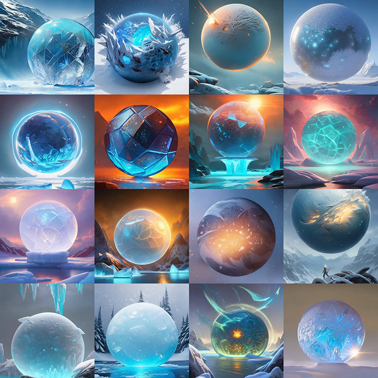

Snow & Ice
The purpose was to create a nice scene and experiment with Unreal Engine 5.2, and mess with shaders a bunch - a snow and an ice shader applied to the base material of all objects, rather than spawning discrete separate ice and snow objects.
Also, I experimented a lot with Niagara to get the desired effects. The effect of the spinning sphere was achieved through Parallax Occlusion Mapping.
To set the mood before starting, I generated a ton of ice spheres with AI:
